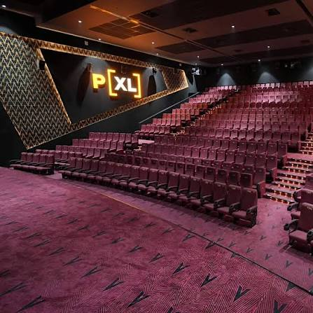
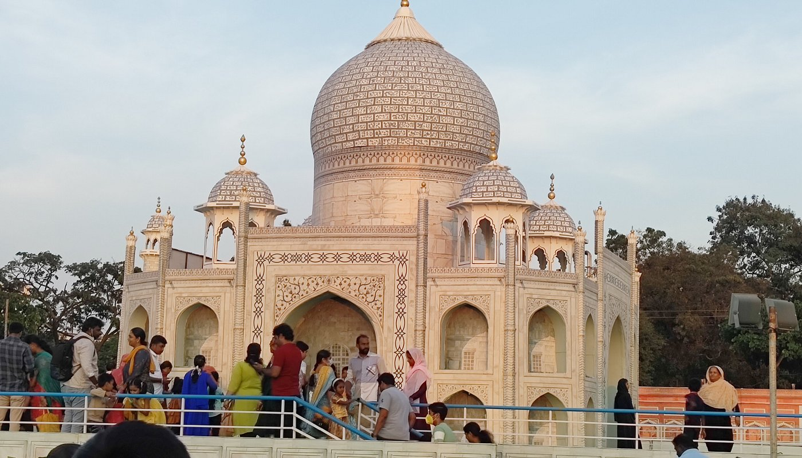

1.Brook Fields
2.V.O.C Park
3.I Love kovai
4.Lulu Mall
5.Race Course


Brookefields Mall is a premier, multi-story shopping and entertainment destination located on Krishnaswamy Road (Brookebond Road) in the heart of Coimbatore, Tamil Nadu. Opened in May 2009, it spans approximately 450,000 to 500,000 square feet and serves as one of the city's most popular lifestyle and retail landmarks. All in one area like Theaters, KFC, showrooms, shopping and also restaurants are available in same place. Features around 120+ retail stores, including major anchor department stores like Westside, Pantaloons, and Marks & Spencer, alongside a basement hypermarket and leading national and international fashion brands. Houses a 6-screen PVR INOX (formerly SPI/Sathyam Cinemas) multiplex on the upper floors and Fun City along with a Scary House (₹150 per person entry fee) on the 3rd floor for kids and families. Includes a large multi-cuisine food court offering diverse fast-food options, snacks, and casual dining cafes.


The VOC Zoo & Park was established in the year 1965 in an extent of 7 acres and is named after freedom fighter V O Chidambaram Pillai. Managed by the Coimbatore City Corporation, the park houses around 890 animals including 335 birds, 106 mammals, and 54 reptiles. The park and zoo is a preferred picnic spot for locals who get their kids to have a wonderful time and introduce them to the world of animals.
The park has a play area for the kids, an aquarium, and a Jurassic Park where not just children but even adults can have fun. Visitors also have access to a variety of fairs, exhibitions, annual events, and several arts and cultural events that are organized in this park. There is also a restaurant in the park premises where one can gorge on some delectable snacks and beverages, such as tea, coffee, cold drinks, sandwiches, burgers, noodles, etc. during your visit. It is a perfect place to get the imagination running to build stories.
Timings: 4 PM - 7.30 PM on Weekdays, 10 AM - 7.30 PM on Weekends, & Closed on Tuesdays
Entry : Rs. 3 for Adults, & Rs. 2 for Children
Toy Train: Rs. 2 for Adults, & Rs. 1 for Children
It is a famous place for zoo animals, we can see all the animals in one place and also having kids park , stadium also available .


It is located in Ukkadam.This place mostly occupied by loving couples during evening time and there was a lake . It is build around that lake . It ia a beautiful place for taking photographs and having exercising in morning time . This is also a park for small kids.Ukkadam Lake Park (officially Ukkadam Periyakulam Park) is a beautifully redeveloped urban wetland oasis that has quickly become the heart of Coimbatore's evening life. Often referred to by locals as the "Marine Drive of Coimbatore," it combines an energetic atmosphere with relaxed lakeside views.
The "I Love Kovai" Selfie Point: The definitive landmark spot for anyone looking to capture their love for the city.
• Golden Hour Gathering: Around 5:30 PM, crowds begin to gather as the sun sets over the water, lighting up the sky in shades of orange and purple.
• The Selfie Phenomenon: You will find families, college students, and couples lining up to take photos in front of the massive, glowing "I Love Kovai" letters.
• Carnival Atmosphere: The entire boardwalk buzzes with energy, featuring local street food vendors selling spicy Kalahari (mushroom), bhel puri, and hot tea, alongside live street performances on weekends.
• Modern Lakefront Life: It represents the "New Kovai"—a city that beautifully bridges its industrial, hard-working identity with a relaxed, modern, and scenic evening lifestyle.